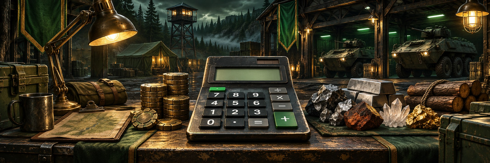

Calculators
Plan your next move
Use costs, rates, and progress shown in your own game. Enter amounts as whole numbers where a field expects a resource count.

More calculators from ATLANTIS HUB
Open these tools for full upgrade paths, prerequisite trees and game-specific cost tables.
Research treesPrerequisites, time, resources and power
Red gearPromotion and breakthrough costs
Exclusive weaponsFragments from your current star to your target
Chips and resonanceCopies, material and set progression
Industrial buildingsPrecision Parts and Watch Tower requirements
PetsFood and breakthroughs
Troop trainingTime, resources and power by tier
APC workshopAlloys and blueprints
Boomers and RoamersEnergy, rewards and earnings
Server timeConvert events to your time zone